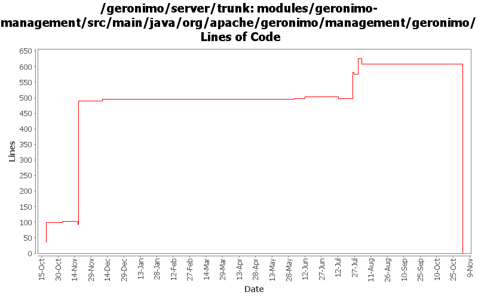

[root]/modules/geronimo-management/src/main/java/org/apache/geronimo/management/geronimo
 stats
(0 files, 0 lines)
stats
(0 files, 0 lines)

| Author | Changes | Lines of Code | Lines per Change |
|---|---|---|---|
| Totals | 140 (100.0%) | 1075 (100.0%) | 7.6 |
| vamsic007 | 14 (10.0%) | 762 (70.9%) | 54.4 |
| djencks | 8 (5.7%) | 103 (9.6%) | 12.8 |
| kevan | 64 (45.7%) | 70 (6.5%) | 1.0 |
| gnodet | 10 (7.1%) | 64 (6.0%) | 6.4 |
| pmcmahan | 1 (0.7%) | 52 (4.8%) | 52.0 |
| jlaskowski | 4 (2.9%) | 24 (2.2%) | 6.0 |
| prasad | 39 (27.9%) | 0 (0.0%) | 0.0 |
GERONIMO-3565. Modules distributed amongst framework/modules and plugins
0 lines of code changed in 39 files:
GERONIMO-3350 cleanup now-unused methods
0 lines of code changed in 1 file:
GERONIMO-3350 updates to web connector portlet for recent api WebManager api changes. This work
is not complete yet but should allow others to work on the tomcat and jetty connectors with some
UI support. Creating and editing secure connectors in particular is still very fragile.
The basic UI with some input validation seems to work OK. Had to comment out some of the
connector attributes for the jetty connectors because the kernel thinks that they are not persistent
attributes when it tries to create a new connector, even though the gbean info looks to me like they
should be, needs more investigation.
52 lines of code changed in 1 file:
GERONIMO-3350 get rid of questionable getURLFor method
0 lines of code changed in 1 file:
GERONIMO-3350 second steps, more jetty implementation
24 lines of code changed in 1 file:
GERONIMO-3350 first steps so others can start on tomcat and the console
68 lines of code changed in 1 file:
GERONIMO-3312 Eliminate obselete org.apache.geronimo.management.geronimo.J2EEServer.getLoginService() method
o Removed org.apache.geronimo.management.geronimo.J2EEServer.getLoginService() method
o Removed org.apache.geronimo.management.geronimo.LoginService interface
0 lines of code changed in 1 file:
GERONIMO-3175 clean up some unused code left over from not proxying connection factories
6 lines of code changed in 1 file:
GERONIMO-3034 GERONIMO-2655 New SelectChannel and AJP connectors. Also hook the connectors up to our thread pool
3 lines of code changed in 1 file:
GERONIMO-3175 make connection managers serializable, move some references around.
1 lines of code changed in 1 file:
GERONIMO-3175 Don't use proxies for connection factories. One bad side effect is that conection factories are not serializable
1 lines of code changed in 1 file:
GERONIMO-2537 Some files still have old license headers. Update with new license headers. Also, some files were still mising headers
12 lines of code changed in 2 files:
modified svn properties
387 lines of code changed in 7 files:
GERONIMO-2413 Add a Certification Authority (CA) portlet to Geronimo console
375 lines of code changed in 6 files:
GERONIMO-2537 Update the src headers in server/trunk/modules to be compliant with the new ASF src header and copyright policy (http://www.apache.org/legal/src-headers.html). I also did some cleanup of the src headers and tried to make them all a consistent format
58 lines of code changed in 62 files:
Partial fix for GERONIMO-2537 All Geronimo source files must be brought in line with the new ASF source header and copyright notice policy
The modules directory is supposed to be migrated. There're some issues with some files, but they'll be handled manually
24 lines of code changed in 4 files:
GERONIMO-2504: Allow all read-only operations on KeystoreInstance to be available to services
64 lines of code changed in 10 files: